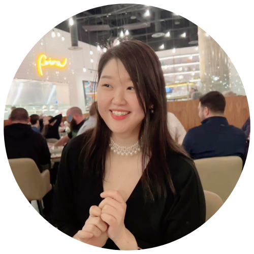

About Me
I am a Lecturer in the Department of Linguistics at University of California, Los Angeles, located on the traditional, ancestral and unceded territory of the Gabrielino/Tongva nation.
My primary research interests focus on how multilingualism shapes speech across linguistic, social, and acoustic dimensions. Specifically, I study how multilingual and heritage speakers — such as Korean-Canadians in Vancouver — adjust their voice and articulation across languages, and how these shifts are perceived. I’m also interested in how multilingual speakers contribute to the evolving soundscape of Canadian English, either participating in or resisting ongoing sound changes.
In addition to this work, I’m broadly interested in the motor and sensorimotor systems that underlie speech production, and how these systems interact with neurodegenerative diseases. I explore how language-specific contrasts and varying linguistic demands shape motor engagement, and how disruptions to these systems can differentially affect multilingual speakers. This perspective allows me to connect phonetic patterns with the neural and motor mechanisms that support them.
Beyond research, I’m also deeply invested in teaching. I regularly teach courses in speech science and phonetics, aiming to make the material accessible and engaging for students from a wide range of backgrounds. I view linguistics not only as a scientific discipline, but also as a lens for understanding the physical and social foundations of human communication.
Outside of work, I find joy in the quiet routines that keep me grounded: cooking a healthy homemade meal, doting on the latest photos and videos of my five-year-old nephew and three-year-old niece, and going on long walks to reflect on all the little things I’m thankful for.
Contact: sylvia_cho (at) humnet.ucla.edu